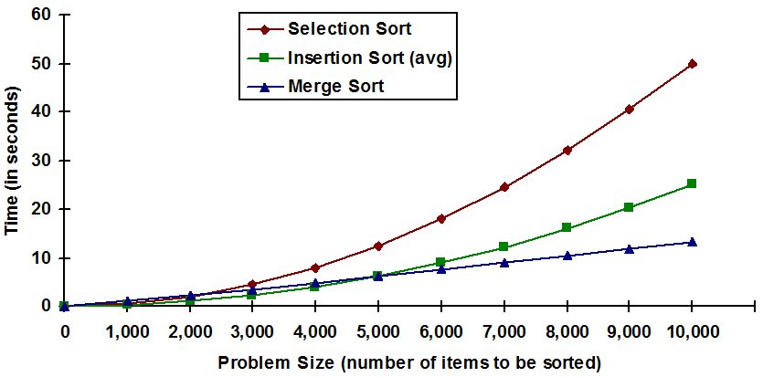

5.1 Introduction
One of the most important concepts in computing is the concept of an algorithm. An algorithm is a detailed sequence of steps that describes how to solve a problem or accomplish some task. In order to fully understand this definition, it is important to distinguish between a problem, an algorithm for solving that problem, and the process used to design the algorithm.
We all have a good intuitive feel for what a problem is – it is “something” that we want an answer to. More formally, a problem statement generally consists of: (1) a description of the conditions at the start of the problem solving process, also known as the input; and (2) a description of the valid solution states, or desired output. Often these aspects of the problem are stated explicitly, such as: “the input will be three integer numbers and the output will be the sum of those numbers.” At other times they are stated implicitly, as in: “determine the amount of income tax you owe this year,” where the inputs are implied to be your income, tax rate, deductible expenses, and other such things.
An algorithm is essentially a description of how to solve a problem. Computer programs are just algorithms that are written in a language that can be executed by a computer. It is important to realize that when a computer executes, or runs, a program, it does not really “understand” the problem it is solving. Instead, the computer is blindly following a sequence of instructions. In general, computers do not design algorithms, human beings do. The reason for this is that designing a good algorithm requires creativity and imagination (in addition to a lot of hard work).
One way to think about the difference between designing an algorithm (which humans do) and executing an algorithm (which computers do) is to think about the differences between performing a piece of music and composing that piece. Imagine a composition in the form of sheet music; say Beethoven’s Piano Sonata No. 14 “Moonlight.” The notes and other symbols printed on the page are instructions that describe how to play that piece. These instructions are an algorithm that any competent pianist can follow (execute on a piano) to produce the music. The job of the performer can be thought of as quite mechanical, requiring no imagination or creativity[1]. In fact, modern synthesizers can accept a musical score and perform it flawlessly.
The job of the composer is very different. He or she imagines and designs the piece of music and ultimately encodes it as a series of symbols on paper. Clearly, this task requires a set of skills, and level of creativity, very different from the performer. In this analogy, the performer’s role is similar to that of the computer – simply executing the algorithm or playing the music, while the composer’s role is similar to that of a computer programmer – designing the instructions that can be followed to create the music.
This chapter is intended to give you a better understanding of algorithms and how humans develop them. Its primary goal is to help you see that there are often many ways to solve a problem and that these ways can differ greatly in efficiency.
Section 5.2 presents a simple problem and uses it to develop the concepts of “algorithm” and “algorithm efficiency.” Sections 5.3 and 5.4 describe two common and useful tasks, searching and sorting, and present a number of different procedures (algorithms) for solving them. The efficiency of each of the algorithms is characterized in order to determine the “best” way to accomplish these two tasks.
5.2 Algorithms and efficiency
Let’s say you are shown two different algorithms for solving the same problem. One algorithm is short (1/2 page) and easy to understand. The other algorithm is longer (several pages) and more difficult to understand. You are asked to choose the best algorithm for solving the problem. Under these circumstances, it would seem that the choice is obvious – you should use the first algorithm. In reality, however, the decision may not be nearly so clear cut. In fact, depending on other factors such as those discussed below, the longer, more complex looking, algorithm might actually be the best choice.
Why? Well, to begin with, just because an algorithm is easy to understand does not mean that it is a “good” algorithm. Often there is a straightforward way of solving a problem, albeit one that requires a tremendous amount of effort to put into practice. For example, it’s possible to determine the amount of water in a rectangular swimming pool by simply counting the number of trips it takes to empty the pool using a one gallon bucket. Such simple-minded problem solving approaches are known as brute-force methods. Other, more ingenious, solutions may exist that are somewhat harder to understand, but more efficient in terms of the amount of work required to solve the problem. For example, the dimensions of the pool could be measured, its volume computed, and the number of gallons of water in it inferred.
Here is another example. Say you want to determine how many one-foot square tiles would be needed to cover the floor of a perfectly square room. To solve this problem you are given a very large collection of tiles, each one-foot square and assured that the room is a whole number of feet across, so you need not worry about fractions of tiles.
The brute-force solution to this problem would be to actually cover the floor with the tiles you have been given, laying them in neat rows and keeping a careful count of how many tiles you used. This algorithm, which will be referred to as Algorithm A, is presented in Figure 5.1. Note that this algorithm is so simple that any child could understand it – once he or she had learned to count.
- 1. Note that when we begin we have laid no (zero) tiles
- 2. Repeat the following steps until the entire floor is covered
- 2.1 Lay a tile on the floor
- 2.2 Add one to the number of tiles currently laid
- 3. Write down the number of tiles used
Figure 5.1: Algorithm A – the brute force solution to the tile problem
Another algorithm for solving the same problem would involve laying a single row of tiles along one of the walls of the room. Since the problem states that the room is square, all that needs to be done at this point is to multiply the number of tiles in this row by itself. If, for example, the row contained 10 tiles, then that wall would be 10 feet in length, so the entire square room would have to be 10 feet by 10 feet or 100 square feet. Hence 100 tiles would be required to cover the entire floor. This algorithm, referred to as Algorithm B, is presented in Figure 5.2.
This algorithm is longer than the first one – it consists of four steps rather than three. The algorithm is also somewhat harder to understand since doing so requires the ability to multiply and some basic knowledge of geometry. Despite these shortcomings, Algorithm B is much more efficient than Algorithm A.
To get a feel for how much better Algorithm B is than Algorithm A, we can look at the time actually required by both algorithms to determine the number of tiles needed to cover a series of different sized rooms. Let’s say it takes 9 seconds to properly place a tile and another second to add one to the number of tiles laid so far. So, “processing” a tile takes a total of 10 seconds. Furthermore, let’s say that we need an entire minute to perform a multiplication operation since we want to take our time and check the result carefully to be sure it is correct.
- 1. Note that when we begin we have laid no (zero) tiles
- 2. Repeat the following steps until one row of tiles has been laid
- 2.1 Lay a tile on the floor
- 2.2 Add one to the number of tiles currently laid
- 3. Multiply the number of tiles in one row by itself, giving the total number of tiles needed to cover the floor
- 4. Write down the number of tiles needed.
Figure 5.2: Algorithm B – a better solution to the tile problem
Given these assumptions, how long will it take to solve the problem for a room that is 12 feet by 12 feet? Algorithm A requires 24 minutes (144 tiles times 10 seconds per tile is 1,440 seconds or 24 minutes). Algorithm B requires only 3 minutes (12 tiles times 10 seconds per tile gives 120 seconds to lay the single row of tiles, plus 60 seconds to perform the multiplication, for a total of 180 seconds or 3 minutes). Here, the “simple” algorithm, A, took eight times as long as the “complex” algorithm, B.
If you play around with different room sizes, you will find that the gap between the “runtime” of the two algorithms increases dramatically with increasing room size. For a 20 by 20 foot room Algorithm A takes 1 hour 7 minutes while Algorithm B takes 4 and 1/2 minutes. Here the second algorithm is over 15 times faster than the first one. As the room size shrinks, the gap closes. For a 5 by 5 foot area Algorithm B is only about twice as fast as Algorithm A. In fact, for very small “room” sizes Algorithm A is actually faster than Algorithm B. For example, if the area was only 2 by 2 feet, under our current assumptions, Algorithm A would require 40 seconds, while Algorithm B would need 1 minute 20 seconds. Remember, we are reserving an entire minute to do the multiplication. Both algorithms take the same amount of time to complete when the room is exactly 3 feet by 3 feet.
Figure 5.3 contains a graph of the runtimes of these two algorithms. The horizontal dimension represents the length of one wall of the room, in feet. The vertical axis represents the amount of time (in seconds) required to solve the problem. The figure shows that for problem sizes less than 3 by 3, Algorithm A is faster. In the case where the problem size is exactly 3 by 3 both algorithms require the same amount of time. For problem sizes greater than 3 by 3, Algorithm B is faster.
Figure 5.3: A comparison of the run-times of algorithms A and B
It is natural at this point to express in formal, mathematical notation the runtime of these two algorithms. For our square room, let N be the length (in feet) of any of the walls, the runtime of Algorithm A (in seconds) is 10N2 and the runtime of Algorithm B (also in seconds) is 10N+60. Due to the form of these equations, computer scientists refer to the first algorithm as “quadratic” and the second algorithm as “linear.” Generally, linear algorithms are preferred over quadratic algorithms, since they tend to solve large problems faster.
This section began with a hypothetical question: “If you were given two algorithms for the same problem, one of which appeared more complicated than the other, which algorithm should you use?” As we have seen, the answer to this question is more complex than it first appears. In order to choose the best algorithm we need answers to questions such as: Which algorithm is more efficient? If the “harder” algorithm is more efficient, how long will it take to understand that algorithm? Will you be using the selected algorithm only once, or will you need to solve the problem many different times?
Clearly all of these factors, and many others, are important. If you were only going to solve the problem once, the time taken to understand both algorithms and determine which was faster might not be worth the effort. On the other hand, if it were necessary to solve the problem many different times, then perhaps the time spent studying both algorithms to determine which was faster would be well spent.
It is also important to remember that there is often no “fastest” algorithm for all sizes of a given problem. As with the tile covering problem above, which algorithm is best often depends on the size of the actual problem to be solved. In general, computer scientists concentrate on trying to find the best algorithms for large problem sizes since that is where performance improvements are most important.
A final thought is that in the above discussion, the “best” algorithm was assumed to be the fastest algorithm. While this is usually the case, sometimes it is appropriate to define “best” in other ways, such as the algorithm that uses the least computer memory space or the algorithm that is the easiest to code.
Exercises for Section 5.2
- Using Algorithm A, how many tiles must be laid in order to determine the number of tiles needed to cover a 10 by 10 foot room?
- Using Algorithm B, how many tiles must be laid in order to determine the number of tiles needed to cover a 10 by 10 foot room?
- Assuming 5 seconds to lay a tile and 10 seconds to perform a multiplication operation, show the amount of time needed by both algorithms, A and B, to compute the number of tiles for a 10 by 10 foot room.
- Assuming 5 seconds to lay a tile and 10 seconds to perform a multiplication operation, compare the runtimes of the two algorithms, A and B, by constructing a graph similar to the one presented in Figure 5.3.
- Using the assumptions of the previous problem, at what point does Algorithm B become faster than Algorithm A – in other words, what is the smallest room size for which Algorithm B is faster than Algorithm A?
5.3 Searching
Search is one of the most common tasks performed by computers. When you check out at the supermarket and the cashier runs your items over the scanner, what actually happens is that a unique number (the UPC or Universal Product Code) is read by the scanner. The store’s computer system then searches its records to determine what item matches that code number. The item’s price and description is retrieved and the scanner beeps to let the cashier know the item was recognized. If no item with that UPC number is found, the cashier either rescans the item or keys in a price by hand. When you go to your university’s registrar’s office for a copy of your transcript, a clerk will key your student number into the computer system. That system will then search for the student record matching that number and then return that record if found. Every time you use a credit card a similar search operation must take place to retrieve your account record. In fact, searching is an integral part of most any business or information transaction. Few such transactions would be possible without efficient search algorithms.
At its most basic we can describe the search problem in the following way: Given a list of items together with a target item to be searched for, return “yes” if the item occurs in the list and “no” otherwise. Of course, as illustrated in the above examples, we frequently extend this definition to include searching for a record based on some key. A record is a collection of related information. For example, a student record would be all of the information that pertains to a particular student, such as the student’s name, address, student number, and transcript. A key is a unique identifier that can be used to identify a record. A student number is an example of a key that is commonly used for identifying student records. In the extended version of search, the inputs are a target key and list of records. If a record containing the target key exists in the list, then extended search returns that entire record, rather than just a “yes” message indicating that such a record exists. If no such record can be found, a “no” message will be returned.
Regardless of whether we are considering the extended search or the basic search, the main problem is to determine whether a given value is present in a list of values. There are two primary approaches to this problem. One is called sequential search and the other is called binary search. As will become apparent shortly, sequential search is the simpler, but less efficient, of the two.
5.3.1 Sequential search
Sequential search works in the following way: starting at the first item in the list, compare each item in the list to the item you are looking for. As soon as you find the item, print “Yes, found it” and then quit. If you reach the end of the list without having found the item, you should print “No, did not find it” and then quit. The algorithm for sequential search is expressed more formally in Figure 5.4. Note that step three of the algorithm is reached only in the event that the entire list was searched and the target item not discovered.
Figure 5.5 illustrates the behavior of the sequential search algorithm given the eight item list (50,10,30,80,70,20,60,40) and a target value of 20. When looking for the value 20, only the first six items of this particular list need to be examined. This is because the target value occurs in the sixth position of the list. If, on the other hand, the target value was 50 and the list remained unchanged, this algorithm would have to examine only one item – the first item in the list. Given the same list and a target value of 90, the algorithm would be forced to examine all eight items to determine that this target does not occur anywhere in the list.
In the previous paragraph, we looked at the behavior of sequential search on a specific list of eight numbers given several different target values. A general description of the algorithm’s efficiency, in terms of the number of items to be searched, would be much more useful. Such a description would allow us to predict the average number of comparisons required to find an arbitrary key given only the size of the list instead of the actual values. In other words, the question we would like answered is “What is the behavior of this algorithm, in general, given an arbitrary target and list of N items?”
- 1. Let the current list item be the first item in the list.
- 2. Repeat the following steps until (a) you have reached the end of the list
- or (b) are explicitly told to halt.
- 2.1. If the current item is the same as the target item then
- 2.1.1 Print “Yes, found it.”
- 2.1.2 Halt (quit looking)
- 2.2 Let the current item be the next item in the list
- 3. Print “No, did not find it.”
- 4. Halt
Figure 5.4: Sequential search
Figure 5.5: Sequential search for the value 20
To begin with, if the target item is not in the list, it will be necessary to look through the entire list to verify this fact. So, for N = 8 items, a search that ends in failure will require N, or 8, comparisons. Let’s say we were executing sequential search on an antique computer that requires 1/1,000 of a second to perform a comparison.[2] In that case, an unsuccessful search of 10,000 items would require 10 seconds.
Now, what if the item is in the list? How many comparisons would be required to find the item? Well, as the above example with eight items showed, it varies. Sometimes the target item will be right at the beginning of the list, so only one comparison is needed to find it. At other times, the target item will be the very last item in the list, and every item must be examined – so for a 10,000 item list, all 10,000 items would be examined.
If you performed lots of searches, and determined the “mean” or “average” number of comparisons required to find a target item that you know to be in the list, you would find that, on average, you had to scan about half the list. This should not be surprising, since the “good” cases, where the target is at the front of the list, and the “bad” cases, where the target is at the end of the list, tend to cancel each other out over multiple searches. Thus, on average, successful sequential searches of an N item list require ½ N comparisons.
So, given a list of 10,000 items, on average 5,000 comparisons are required to find an item that is in the list. If the algorithm were implemented on a computer that could process one comparison in 1/1,000 of a second, 5 seconds would be required, on average, for the search operation to complete. This assumes that the target item is in the list. Remember that it will take exactly 10,000 comparisons (or 10 seconds) to verify that a given number is not in the list. Also remember that the actual amount of time required by any particular search of this list will vary on our antique computer from 1/10,000 second all the way up to 10 seconds, since there is no way to predict where (or even whether) the target item will be found in the list.
While an average search time of 5 seconds for 10,000 items may seem pretty impressive for an antique computer, consider that using the same assumption of 1,000 comparisons per second, it would take about 42 hours, on average, to retrieve a social security record, given a valid social security number; and 83 hours (3 ½ days!) to determine that an input number was not valid. This is because there are about 300 million people in the United States, most of whom have a social security number. On average, it would be necessary to look through 1/2 of these (about 150 million records). This would take 150,000 seconds, almost 42 hours. Clearly, there must be better search algorithms.
To summarize, a sequential search of an N item list requires N comparisons to determine that a number is not in the list. If the number is in the list, sequential search can, on average, verify this fact using only ½ N comparisons. Regardless of this fact, the most precise statement that can be made about any particular sequential search of N items is that it will require somewhere between 1 and N comparisons. These ideas can be expressed succinctly by the following three equations:
Minimum number of sequential search comparisons = 1
Maximum number of sequential search comparisons = N
Average number of sequential search comparisons for successful searches = ½ N
Exercises for Section 5.3.1
- Given a 1,000 item input list, what is the maximum number of comparisons that could be required by the sequential search algorithm? Describe the two situations that would cause this behavior to occur.
- Given a 1,000 item input list, what is the minimum number of comparisons that could be required by the sequential search algorithm? Describe the situation that would cause this behavior to occur.
- On average, a successful sequential search of 1,000 items will require how many comparisons?
- Given an antique computer that could perform only 1,000 comparisons per second, how many seconds would be required to perform a sequential search of a 1,000 item list in the best, worst, and average cases?
- Given the same computer as in question 4, how many seconds would be required to search a 2,000 item list using the sequential search algorithm in the best, worst, and average cases?
5.3.2 Binary search
Binary search is another approach to the search problem. It is much more efficient than sequential search, but requires that the search list be presorted. Essentially, binary search begins by jumping to the midpoint of the search list and comparing the item it finds there to the target item it is searching for. Consider the result of this comparison. Clearly, if the target item is the same as the middle item, then the algorithm has found the item it was looking for and can print the “Yes, found it.” message and halt. Let’s say that the middle item is smaller than the target item. Since the search list was presorted, if the target item occurs anywhere in the list, it must be after the midpoint. Hence, the first half of the list – everything up to and including the middle item – can be safely discarded without an exhaustive examination of each of the items in that portion of the list. If the middle item had been larger than the target, then the target could only occur in the first half of the list. The second half of the list – the middle item and everything after it – could be dropped.
After performing this first step, the current list would be half the size of the original list. But, what should be done next? The answer is to repeat this process on the new list: select the middle item of the new list, compare it to the target item, and if it does not match discard half the items in that list. This process may be repeated until either: (1) the target item is found, or (2) the list of remaining items is empty. After the second step, if the target item is in the list but has not yet been found, its location will have been narrowed to a list that is ¼ the size of the original list. After three steps the list is only 1/8 the original size.
The binary search algorithm is presented formally in Figure 5.6.
- 1. If the list is empty (has no items) then
- 1.1 Print “No, did not find it”
- 1.2 Halt (quit looking)
- 2. Let the current item be the item in the middle of the list
- 3. If the current item is the same as the target item then
- 3.1 Print “Yes, found it”
- 3.2 Halt (quit looking)
- 4. If the current item is larger than the target item then
- repeat this entire procedure on the first half of the list
- -- the items up to, but not including, the middle item
- 5. If the current item is smaller than the target item then
- repeat this entire procedure on the second half of the list
- -- the items following, but not including, the middle item
Figure 5.6: Binary search
Binary search depends on being able to quickly determine which item is in the middle of the list of remaining items. If the number of items in the list is odd, then there is a well-defined middle item. If the list is composed of an even number of items, then there is no item in the exact middle of the list. In this case, the very next item following the midpoint (which falls between items) is chosen as the “middle” item. The process of determining the position of the “middle” item in a list of N items can be expressed mathematically as:
position of middle item = ⌊N/2⌋+1
where ⌊⌋, read “floor”, means that fractions should be dropped. When N = 7, position 4 would be designated as the “middle” position.
- position of middle item = ⌊N/2⌋+1
- = ⌊7/2⌋+1
- = ⌊3.5⌋+1
- = 3 + 1
- = 4
With an N of 8, position 5 would be designated as the “middle” position.
- position of middle item = ⌊N/2⌋+1
- = ⌊8/2⌋+1
- = ⌊4.0⌋+1
- = 4 + 1
- = 5
Figure 5.7 illustrates two examples of binary search on a seven item list – one successful, the other unsuccessful. Note that in either case, only three comparisons were required to determine whether the target item was in the original seven item list. In fact, no more than three comparisons will ever be needed in a binary search of a seven item list. A sequential search of a seven item list requires 3.5 comparisons, on average, for successful searches and 7 comparisons for unsuccessful searches.[3]
Of course, these numbers don’t tell the whole story. Before a comparison between the target item and a list item can be performed, the list item must be selected. In sequential search this amounted to simply selecting the next item in the list (adding one to the current position). As we saw in the previous paragraph, the process of selecting the “middle” item for binary search is more complicated. As one would expect, a computer will require more time to perform the “middle” item position calculation for binary search as compared to the next item position calculation for sequential search. So, in reality, binary search might actually take longer than sequential search on a list of seven items.
(a) Successful binary search for the value 10
(b) Unsuccessful binary search for the value 55
Figure 5.7: Two examples of binary search
The true advantage of binary search over sequential search can really only be seen on large problem sizes. Figure 5.8 shows that at most only 14 comparisons would be necessary to perform a binary search of a 10,000 item list. This is a worst case result – at every point the target item is assumed not to match the current “middle” item. Also, whenever the two “halves” of the list were not exactly the same size (remember, they can differ by one item), the larger portion was selected.
So, how does binary search compare to sequential search? As stated earlier, a sequential search of a 10,000 item list requires, on average 5,000 comparisons to find an item that is in the list, and 10,000 comparisons to determine that an item is not present in the list. A binary search of 10,000 items requires at most 14 comparisons. Thus, in terms of the number of comparisons, binary search is much more efficient than sequential search. However, in order to use the binary search approach, the items must be presorted.
The actual amount of time required by any search algorithm depends on both the number of comparisons it performs and the amount of time needed to perform each comparison. A comparison operation in binary search may take longer than a comparison operation in sequential search since the location of the middle item must be determined. For the purpose of discussion, let’s say that the process of selecting the middle item in binary search takes 100 times as long as finding the next item in sequential search. In reality, a binary search comparison does not take anywhere near that long, but in the following analysis – which will show binary search to be more efficient than sequential search – we want to err on the side of caution.
Figure 5.8: Number of comparisons in a binary search of a 10,000 item list (worst case)
We are purposefully “handicapping” binary search, so that when our analysis is complete no one can claim that we “cooked the books” to make binary search look better than it really is by failing to take into account the overhead involved with finding the middle item. These kinds of “conservative” assumptions are often made when analyzing the efficiency of a proposed algorithm.
Assuming binary search comparisons take 100 times as long as sequential search comparisons, a single comparison would require 1/10 of a second – if we used the same “antique” computer that was employed in our analysis of sequential search. This is 100 times longer than the 1/1,000 second required for each comparison in sequential search. Given that at most 14 binary search comparisons are required to search 10,000 items, the search will take no more than 1.4 seconds on this computer, compared to an average of 5 seconds for a successful sequential search and 10 seconds for an unsuccessful search.
When we consider larger lists, such as a search through 300 million social security records, the performance of binary search becomes even more impressive. Earlier, we computed that sequential search would require about 42 hours to retrieve a social security record, given a valid social security number, and over 83 hours (3 ½ days) to determine that an input number was not valid – assuming one comparison every 1/1,000 of a second. Binary search could perform the same search in under 3 seconds – assuming one comparison every 1/10 of a second. This amazing result follows from the fact that each comparison eliminates one half of the items that remain to be searched. Thus, even with the “handicap” of making comparisons take 100 times longer in binary searches than in sequential searches, the superiority of binary search on large lists is still readily apparent.
Figure 5.9: A comparison of the predicted runtimes of sequential and binary search
The maximum number of comparisons required to perform a binary search of N items can be expressed mathematically as:
Maximum number of binary search comparisons = ⌈log2(N+1)⌉
where ⌈⌉, read “ceiling”, means that fractions should be increased to the next highest whole number, and log2(N+1) is the power that 2 must be raised to in order to equal (N+1). You should convince yourself that this formula is correct by working through the binary search algorithm on a number of small examples in order to establish how many comparisons are actually needed, and then check that number with the formula. Note that the formula even works in the case of a list with zero items.
Using this equation, it is possible to predict that a binary search of a 1,000 item list will require, at most 10 comparisons. This is because log2(1,001) is nine point something [210 = 1,024 making log2(1,024) = 10], and the ceiling function raises this result to the next highest whole number, 10. Similarly, a list that is 40 items long will require, at most 6 comparisons, because log2 (41) is five point something [2 5 = 32 and 2 6 = 64].
Figure 5.9 contains a graphical comparison of the runtimes of sequential search and binary search, given the assumptions concerning comparison times discussed above. The runtime of sequential search appears as a straight line with a constant slope. For this reason, sequential search is known as a linear algorithm. Binary search appears as a curve with a slope that grows ever more shallow with increasing problem size, and is known as a logarithmic algorithm. In general, logarithmic algorithms are preferred over linear algorithms, since they tend to run faster on large problems.
In spite of the fact that we assumed a comparison would require 100 times as long in binary search as in sequential search, the binary search algorithm is still clearly more efficient for searching large lists. One way of understanding why this is true is to realize that the size of the list must double before binary search performs a single additional comparison. For sequential search, adding one additional item to the input list will, in the worst case, require an additional comparison – and, on average, add 1/2 comparison for successful searches. So, as problem size increases, the initial advantage that sequential search had due to its faster comparison time is quickly overcome by the smaller number of comparisons required by binary search.
Under the assumptions of Figure 5.9, binary search becomes faster than sequential search on lists that contain about 2,500 or more items. Under different assumptions, the point at which binary search becomes faster than sequential search would shift. For example, if we assumed that binary search comparisons were ten times slower than sequential search comparisons, binary search would become faster than sequential search on lists that contained more than 160 items.[4]
Finally, it is important to note, once again, that binary searches can only be performed on lists that are already sorted. Given an unsorted list, it is necessary to first sort the list before beginning the binary search procedure. This observation leads us to our next topic of discussion: the sorting problem and algorithms for its solution.
Exercises for Section 5.3.2
- In a manner similar to Figure 5.7, illustrate the behavior of a binary search for the value 75 in the list: 25 30 35 40 45 50 55 60 65 70 75 80 85 90 95
- Show that the actual number of comparisons required by the binary search in the previous problem exactly matches the maximum number of comparisons predicted by the equation for binary search.
- Using the same list given in problem 1, supply a target value (a value to be searched for) that could be found by binary search using less than the maximum number of comparisons predicted for this list. What is the exact number of comparisons needed to find the target you supplied?
- What is the maximum number of comparisons needed to perform a binary search of a 63 item list? An 80 item list?
- What is the largest list that can be searched by the binary search method given 15 or fewer comparisons?
- Given the assumptions concerning the time to perform a comparison in sequential (1/1,000 second) and binary (1/10 second) search, which technique should be used to search a 1,000 item list? A 2,000 item list? A 10,000 item list?
5.4 Sorting
Humans seem to have a basic desire to structure and organize the world around them. One of the most basic ways of organizing a collection of objects is to arrange them according to some common characteristic, such as size, weight, cost, or age.
A group of objects is sorted when the objects are arranged according to some rule that involves the use of “orderable keys.” While the term “orderable” will not be rigorously defined, intuitively it means keys on which the concepts of “less than” “greater than”, and “equal to” make sense, or on which “precedes” and “follows” have meaning. Orderable keys include numbers, such as: weight, height, age, income, and social security number. Character strings, such as words, names, and addresses, are also orderable. Numeric keys are generally arranged from smallest to largest, or, occasionally, largest to smallest. Character based keys are generally arranged in dictionary, or lexicographic, order.
Sorting is a very important problem. If information is not organized in some fashion, retrieval can be quite time consuming. To find a particular item in an unsorted list, we are forced to use sequential search, rather than the more efficient binary search. While the sequential search approach may be acceptable for small numbers of items, it becomes unwieldy when dealing with large numbers of objects. For this reason, computer scientists have focused a great deal of attention on the sorting problem and have devised a number of sorting algorithms. Over the years, these algorithms have been closely studied and the efficiency of each carefully analyzed.
This section presents three common approaches to the sorting problem: selection sort, insertion sort, and merge sort. As was the case with sequential and binary searches, each of the three sorts will be compared to determine their efficiency. In order to develop estimates of the runtimes of the three sort algorithms, we will use a “computer” capable of executing one million comparisons per second. While this value is somewhat more realistic than the “antique computer” (capable of executing 1,000 comparisons per second) used in the previous section, today’s computers are still many times more powerful.
Modern computers are capable of performing billions of basic low-level instructions per second. The number of higher-level operations they can perform each second depends on many factors other than CPU speed. In the case of sorting, the number of comparisons per second depends on factors such as whether the list being sorted is in main memory or on disk, and whether the computer is running other programs besides the sort procedure.
The take home message is don’t place too much emphasis on the numbers we will generate for “predicted runtimes” – since these are highly dependent on the assumptions made concerning computing hardware. Instead, what is important is the relative performance of the algorithms, which is not affected by underlying hardware assumptions.
5.4.1 Selection sort
One of the most straightforward ways of approaching the sorting problem is to use the selection sort method. The operation of the selection sort algorithm can be visualized by imagining a list of input objects and a second, originally empty, list which will eventually hold all of the input items in sorted order. Ascending order selection sort will scan through the input list to determine the smallest item in that list. It will then remove that smallest item from the input list and append it to the end of the sorted list. This process of finding the smallest input item, removing it from the input list and appending it to the end of the sorted list is repeated over and over until the input list is empty. At that point, all of the input items will be arranged in ascending order in the sorted list.
The selection algorithm is presented formally in Figure 5.10. Since the process of “finding the smallest item” involves a number of steps, the algorithm includes a detailed description of that process in step 3.1.
A descending order selection sort could also be defined. In this case the only change to the algorithm would be that instead of selecting the smallest object from the input list in step 3.1, the largest item would be selected. The final result would be a list sorted in descending order, from largest to smallest.

Figure 5.10 Selection sort

Figure 5.11: An example of selection sort
Figure 5.11 illustrates the behavior of the selection sort algorithm on a list of eight items. The “passes” shown in the figure correspond to repetitions of step 3.1, which scans the unsorted list for the smallest item. The rows of the figure represent executions of step 3.1.3.1, which compares the “current item” to “smallest item so far”. In each row, the “smallest item so far” is printed in boldface and the “current item” is underlined.
A careful examination of this figure reveals that 36 comparisons are required to completely sort the eight items. If you think about it, you will see that regardless of the actual items to be sorted, or the original order of those items, 36 comparisons will always be required to sort eight items using the selection sort method. Surprisingly, this is true even if the original “unsorted” list were already sorted to begin with. The algorithm will blindly scan the “unsorted” list during each pass to find the smallest item, not realizing that in this case the smallest item always appears first.
Let’s now turn our attention to the problem of developing a general formula to compute the number of comparisons needed to sort any arbitrary list of N items. One approach to developing such a formula is to start with an example that has already been worked out, such as the example of Figure 5.11, and look for patterns in the way the data is processed.
For an eight item list, the selection sort algorithm must find eight smallest items. In this case, the statements that comprise step 3 of the algorithm of Figure 5.10 will be executed a total of eight times. On each pass through step 3, the smallest item in the unsorted list is found (step 3.1), that item is removed from the unsorted list (step 3.2), and then appended to the sorted list (step 3.3). Hence, during the next pass through step 3 the unsorted list is one item shorter, so there will be one less item to compare.
For an N item list, N smallest items must be found. The first time the unsorted list is searched, all N items must be examined. During the second pass, N-1 comparisons will be performed. During the Nth pass only one item must be examined. Finally, after the Nth pass is completed the list will be sorted. For the sake of our analysis, the point in time when the list becomes fully sorted will be thought of as an N+1th “pass”. This final pass requires zero comparisons, since the list is now sorted.
The number of comparisons needed to sort a list is equal to the number of passes that must be made through the list times the average number of comparisons per pass, or:
Comparisons = Number_of_passes × Avg_number_of_comparisons_per_pass
Figure 5.12 illustrates an analysis of the comparisons required by the eight item selection sort. The eight item sort can be thought of as requiring nine passes (8+1) with an average of four (8/2) comparisons per pass, for a total of 36 comparisons. The reason four comparisons are required, on average, per pass is that the number of items to be scanned decreases by one during each pass – so the initial passes over many items are balanced out by the final passes over few items. In general, the average number of comparisons per pass in selection sort will always be one half of the number of items to be sorted.

Figure 5.12: An analysis of the comparisons required by an eight item selection sort
The number of comparisons required by a selection sort of N items can be computed by the formula:
Number of selection sort comparisons = (N+1) × (1/2N)
Or, equivalently
Number of selection sort comparisons = 1/2(N2+N)
For eight items, we have 1/2(82 + 8) = 1/2(64 + 8) = 1/2(72) = 36 comparisons. You should convince yourself that the formula is indeed correct by performing a variety of similar analyses on different sized lists.
Using this general formula, it is possible to determine in advance the exact number of comparisons selection sort will require to sort any list. For example, given a 10,000 item list we can compute that 50,005,000 comparisons will be needed to perform the sort.
- # of comparisons for selection sort of 10,000 items = 1/2(10,0002 + 10,000)
- = 1/2(100,000,000 + 10,000)
- = 1/2(100,010,000)
- = 50,005,000 comparisons
If we know how quickly some particular computer can perform a comparison operation, we can get a rough idea of how long the selection sort will take to sort a list on that machine. This is because the total time taken by a sort can be estimated as:
Estimated sorting time = Number of comparisons × Time per comparison operation
Assuming we have access to a machine that can perform one million comparisons a second[5], a selection sort of 10,000 items should take approximately 50 seconds (50,005,000 × 1/1,000,000 = 50.005).
It is important to realize that this formula gives only a rough estimate of the time required by a sort. This is because it takes into account only the amount of time involved in comparing items. Clearly, the selection sort algorithm does more than just compare items. For example, it also removes items from the sorted list and appends them to the sorted list. Nevertheless, the runtime of selection sort is highly dependent on the number of comparisons required by the algorithm.
Exercises for Section 5.4.1
-
Illustrate the behavior of selection sort in a manner similar to Figure 5.11 on the following input list:
150 -50 75 -76 12
- How many comparisons were required to sort the list shown in problem 1?
- Given an input list 100 items long, how many comparisons would be required to sort this list?
- Assuming you had an antique computer that could perform one comparison every 1/1,000 of a second, how many seconds would be required to sort a 100 item list using the selection sort algorithm?
- Given the same computer as in problem 4, how many seconds would be required to sort a 200 item list using the selection sort algorithm?
- Given a relatively modern computer capable of one million high-level operations per second, how long will selection sort take to process a list of 1,000 items? A list of 2,000 items? 3,000 items?
5.4.2 Insertion sort
Another approach to sorting is typified by the insertion sort. Insertion sort is the procedure that most people use to arrange a hand of cards. To begin to understand the algorithm, think of an unordered input list as two separate lists. The first item of the input list is considered to be a sorted list one item long, with the rest of the input items (2 through N) forming an unsorted list. While this way of thinking about the input list may seem a bit odd at first, it really makes quite a bit of sense, since a list that is one item long certainly cannot be out of order and is thus sorted.
Insertion sort removes the first item from the unsorted list and marks it as the item to be inserted. It then works its way from the back to the front of the sorted list, at each step comparing the item to be inserted with the current item. As long as the current item is larger than the item to be inserted, the algorithm continues moving backward through the sorted list. Eventually it will either reach the beginning of the list or encounter an item that is less than or equal to the item to be inserted. When that happens the algorithm inserts the item at the current insertion point.
Figure 5.13: An example of insertion sort
The entire process of selecting the first item from the unsorted list and scanning backwards through the sorted list for the insertion point is then repeated. Eventually, the unsorted list will be empty since all of the items will have been inserted into the sorted list. When this occurs, the sort is complete.
The insertion sort procedure is illustrated on an eight item list in Figure 5.13. Notice that this is exactly the same list that was used to illustrate the behavior of selection sort in Figure 5.11. A careful examination of Figure 5.13 will reveal that 19 comparison operations are required to sort these values using the insertion method. This is approximately one half of the 36 comparisons needed by selection sort.
A more formal version of the insertion sort algorithm is presented in Figure 5.14. While this version of the algorithm may appear somewhat more complex than the English version presented above, it is really just a more detailed description of the same process. Most of the action occurs in Step 3. Step 3.1 selects the first item from the unsorted list and marks it as the item to be inserted. Step 3.2 begins the scan for the insertion point at the end of the sorted list. Step 3.3 moves backwards through the list comparing the item to be inserted with the present “current item”. When either the beginning of the sorted list is reached (3.3.1) or a current item less than the item to be inserted is encountered (3.3.2), the item is inserted. Otherwise, the algorithm steps backwards to the preceding item in the sorted list (3.3.3).
- 1. Let the “sorted list” consist of one item – the first item in the input list
- 2. Let the “unsorted list” consist of all input items except the first one
- 3. Repeat the following steps until the unsorted list is empty
- 3.1 Let the “insert item” be the first item in the unsorted list
- 3.2 Let the “current item” be the last item in the sorted list
- 3.3 Repeat until the “insert item” has been inserted into the sorted list
- 3.3.1 If the beginning of the sorted list has been reached then
- 3.3.1.1 Place the “insert item” at the beginning of the sorted list
- 3.3.1.2 Note that the “insert item” has been inserted
- 3.3.2 If the “current item” is less than or equal to the “insert item” then
- 3.3.2.1 Place the “insert item” immediately after the “current item”
- 3.3.2.2 Note that the “insert item” has been inserted
- 3.3.3 If the “insert item” has not yet been inserted then
- 3.3.3.1 If the “current Item” is not the first item in the sorted list
- then Let the item immediately preceding the present
- current item” be the new “current item”
- else Note that the beginning of the sorted list has been reached
- 4. Halt (The sorted list now contains all of the input items, in order.)
Figure 5.14: Insertion sort
The number of comparisons required to sort N items using the insertion method varies depending on the original order of the items. Figure 5.15 illustrates this fact on a five item list. Part (a) of Figure 5.15 shows that 10 comparisons are required to sort the five items when they are originally arranged in reverse sorted order. Part (b) of Figure 5.15 shows that only four comparisons are required by the algorithm when the input list is already presorted. This is different from the selection sort algorithm which always requires a fixed number of comparisons to sort N items, regardless of their original order.
(a) Insertion sort of five items originally in reverse sorted order
(b) Insertion sort of five presorted items
Figure 5.15: Effect of input item order on number of insertion sort comparisons
A general formula for determining the number of comparisons required by insertion sort to order an N item list would be very useful. However, as Figure 5.15 illustrates, the number of comparisons performed by insertion sort depends, in large part, on the original order of the items to be sorted. So, no one formula, based on input size alone, can be developed to capture the required number of comparisons. Instead, three general formulas are developed below: one for the worse possible performance of the algorithm on a problem of size N, another for the best possible performance of the algorithm on a problem of size N, and a third for the average, or expected, performance of the algorithm on a problem of size N.
As was discussed during the analysis of the selection sort algorithm, the total number of comparisons required by a sort algorithm is the product of the number of “passes” through the list and the average number of comparisons performed per pass. Examining Figures 5.13 and 5.15 reveals that insertion sort requires exactly N - 1 passes through the sorted list – for eight items seven passes were made, for five items four passes were made. The reason that N - 1 passes will be needed for N items is that the unsorted list starts out with N - 1 items and during each pass one item is removed from that list and placed in the sorted list. Thus, after N - 1 passes the unsorted list will be empty and the sorted list will contain all N of the original items.
Now that the number of passes through the sorted list is known, we can examine the amount of work required per pass. This is the point at which the order of the inputs has an effect on the number of comparisons needed. Let’s say the input items are presorted, as was the case in part (b) of Figure 5.15. In this case, the last item in the sorted list will always be less than or equal to the first item in the unsorted list. Since only one comparison during each pass through the sorted list will be needed to discover the insertion point, the total number of comparisons necessary for insertion sort in this case is N - 1. Notice that this is the best possible case for insertion sort. Insertion sort performs the minimum number of comparisons when it is given a list that is presorted.
Figure 5.15 part (a) represents the worst case for insertion sort. When the items are in reverse sorted order, insertion sort will require its maximum number of comparisons. In this case, the insertion point will always be at the beginning of the sorted list, forcing the algorithm during each pass to examine and compare every item in the sorted list to the item to be inserted. The number of comparisons will be N - 1 times the average length of the sorted list. You should convince yourself, using reasoning similar to that used for selection sort, that the average length of the sorted list will be 1/2N items. Hence, the total number of comparisons required by insertion sort in the worst case is (N - 1)×1/2N = 1/2(N2 - N). This formula gives 10 comparisons for a 5 item list, as we would expect from Figure 5.15 part (a).
Derivation of a formula for the number of comparisons required by insertion sort in the average case is similar to the reasoning used for worst case. As before, N - 1 passes through the sorted list are required. The only difference between worst case and average case is the number of comparisons to be performed during each pass. When dealing with arbitrary lists, sometimes the insertion point will appear at, or near, the end of the list – requiring one, or a few, comparisons. At other times the insertion point will appear at, or near, the beginning of the sorted list – requiring a comparison between the item to be inserted and each, or most, items in the sorted list. On average, the bad cases and good cases tend to “cancel” each other out, so that we end up examining 1/2 of the sorted list. Since we established above that the average size of the sorted list is 1/2N, the average number of comparisons required per pass is 1/2(1/2N = 1/4N. So, the total number of insertion sort comparisons is (N - 1)×1/4N = 1/4(N2 - N) in the average case.
To summarize, an insertion sort of N items always requires exactly N - 1 passes through the sorted portion of the list. What varies is the number of comparisons that must be performed per pass. The best case, which requires only one comparison per pass, occurs when attempting to sort a list that is presorted. The worst case requires an average of 1/2 N comparisons per pass and occurs when the list is presorted in reverse order. In the average case, during each pass only one half of the items in the sorted list will be examined before the insertion point is found, giving 1/4 N comparisons per pass.
These ideas are expressed succinctly by the following three equations:
Minimum number of insertion sort comparisons = N - 1
Maximum number of insertion sort comparisons = 1/2(N2 - N)
Average number of insertion sort comparisons = 1/4(N2 - N)
When comparing insertion sort to other sorts, generally the average case formula is used, since this represents the expected performance of the algorithm. Occasionally, knowledge of the worst case behavior of the algorithm is also important. Understanding this behavior is useful when attempting to determine, or limit, the maximum amount of time a computing system will take to reach an answer, even in the worst case. Such behavior is important in real time applications such as airplane flight control systems.
Before moving on to our final sort algorithm, let’s take a moment to compare the performance of insertion sort to selection sort. Selection sort always requires exactly 1/2(N2 + N) comparisons to sort N items. In the worst case, insertion sort requires 1/2(N2 - N). So, given any non-empty list, insertion sort will always perform fewer comparisons than selection sort. In the expected case, insertion sort requires 1/4(N2 - N) comparisons, and thus should require about 1/2 the comparisons needed by selection sort. This result is verified by the eight item list of Figures 5.11 and 5.13.
Figure 5.16: A comparison of the predicted runtimes of selection and insertion sort
The smaller number of comparisons needed by insertion sort means that it is generally a faster algorithm than selection sort, assuming a comparison takes the same amount of time in both algorithms (a reasonable assumption). Given a computer capable of one million high-level comparison operations per second, insertion sort will be expected to process a 10,000 item list in about 25 seconds (24.9975). Selection sort is expected to take 50.005 seconds on the same problem – or about twice as long. The result for insertion sort was computed in the following way:
- Avg # of comparisons for insertion sort of 10,000 items = 1/4(10,0002 - 10,000)
- = 1/4(100,000,000 - 10,000)
- = 1/4(99,990,000)
- = 24,997,500 comparisons
- Estimated sorting time = Number of comparisons × Time per comparison operation
- = 24,997,500 comparisons × 1/1,000,000 sec. per comparison
- = 24.9975 seconds ≈ 25 seconds
Figure 5.16 contains a graphical comparison of the expected runtimes of both selection and insertion sort. The horizontal axis represents increasing problem size, and the vertical axis represents the projected runtime, in seconds. The graph indicates that while both algorithms are quadratic in nature, insertion sort runs, on average, in about half the time of selection sort when both are given lists of equal size.
As was pointed out earlier, these times are for illustrative purposes only. Our analysis focuses on comparison operations, and these algorithms do other things. The only way to get exact runtimes would be to actually code these algorithms as computer programs and run them on a real computer. However, analyses such as these are usually good enough to allow us to make meaningful comparisons. The above analysis clearly shows that insertion sort should be preferred over selection sort.
Exercises for Section 5.4.2
-
The number of comparisons required by insertion sort to order N items depends on the original order of those items. Illustrate this fact by showing all of the comparisons necessary to sort each of the following two lists of eight items:
- (a) 10 20 30 40 50 60 70 80
- (b) 80 70 60 50 40 30 20 10
- How many comparisons are needed by insertion sort to sort an eight item list in the worst case? in the best case? in the average case?
- How many comparisons are needed by insertion sort to sort a 100 item list in the worst case? in the best case? in the average case?
- Assuming you had an antique computer that could perform one comparison every 1/1,000 of a second, an insertion sort of 10,000 items should take about 7 hours. Show how this result can be computed from the formulas given in this section.
- Given a relatively modern computer capable of one million high-level operations per second, how long will insertion sort take, on average, to process a list of 1,000 items? A list of 2,000 items? 3,000 items?
5.4.3 Merge sort
In the previous section, insertion sort was shown to generally run faster than selection sort. Are there sorts that run even faster than insertion sort? Definitely!
While insertion sort works well on relatively short lists (e.g., 50 to 100 items), it tends to become quite slow on longer lists. For example, assuming a machine capable of one million high-level comparison operations per second, insertion sort could arrange 10,000 student records in about 25 seconds, which might be acceptable if sorting were not performed very often. However, sorting 300 million social security numbers on the same machine would require over 700 years, on average, and over 14 centuries in the worst case. Clearly, no one can afford to wait that long for a list to be sorted. Thankfully, computer scientists have developed more efficient sorting techniques, such as merge sort and quick sort.
Figure 5.17: Merging two sorted lists
The main idea behind merge sort is that combining, or merging, two presorted lists into a third sorted list is a relatively quick and easy process. Essentially, the merge algorithm works its way through the two presorted lists from front to back. As it moves through these two lists it constructs a third “sorted list” that will hold all of the items in the two input lists combined into a single sorted list. Each of the two input lists will have a separate “current item”. The algorithm compares the two “current items” and appends the smallest onto the end of the “sorted list”. The input list from which this item came then has its “current item” advanced to the next item in that list. This process is repeated until the end of either input list is reached. At that point, the remaining items in the other input list are appended to the end of the “sorted list.” This process is illustrated in Figure 5.17.
Merging two lists with a combined length of N items will take at most N - 1 comparison operations. Fewer comparisons are necessary when one of the lists is shorter than the other, or when the end of one list is reached before the end of the other.
You may be saying to yourself at this point “OK, I understand how the merging operation works, and I can see that it is efficient. But, how can knowledge concerning merging two sorted lists help solve the problem of sorting a single unsorted list?”
The answer lies in the way that merge sort approaches the sorting problem. Rather than viewing the input as a single list of N items, merge sort views it as N lists, each one item long. Since lists that contain a single item are already sorted, the algorithm simply needs to merge the N lists together to produce the final sorted result – a rather clever approach don’t you think?
Merge sort is an example of a general class of algorithms called divide-and-conquer algorithms. Divide-and-conquer algorithms work by taking a single complex problem and dividing it into a number of smaller instances of the same problem. This division process is repeated over and over until a large number of very simple problems are generated. These simple problems are then solved and the results combined to form the solution to the original complex problem.
Divide-and-conquer algorithms tend to consist of three identifiable parts: (1) a procedure for dividing a complex problem into two or more simpler problems, (2) a procedure for solving simple instances of the problem, and (3) a procedure for combining the results of subproblems so that they form the answer to a larger problem.
Figure 5.18: Dividing an eight item unsorted list into eight lists, each containing one item
Figure 5.19: Merging eight single item lists into one eight item sorted list
Figure 5.18 illustrates the process of dividing a single unsorted list of eight items into eight lists, each one item long. First, the eight item input list is divided into two unsorted lists of size four, then four lists of size two, and finally, eight lists of size one. In general this approach can be used to divide any list of size N into N lists of size one. The N item list is first divided into two lists of size N/2. This is done by computing the mid point of the original list and marking the first half as one list and the second half as another list. If the original list contains an odd number of items and therefore cannot be evenly divided, one of the lists is allowed to have one extra item. By repeating this divide step over and over, eventually a point will be reached where there are N total lists, each of size one.
The second step of a divide-and-conquer algorithm is to solve the simple problems. In the case of merge sort, the process of subdividing the input list terminates when lists of size one are reached. These lists are, by their very nature, sorted, so no work is required to order them.
The final step of every divide-and-conquer algorithm is to combine the results of the subproblems. This is where the actual work goes on in merge sort. The algorithm will consider each of the N single item lists in pairs. Pairs of single item lists will be merged to form a total of N/2 lists of two items each. In turn, these lists will be processed in pairs to form N/4 sorted lists, each four items in length. This merging of pairs will continue until a single sorted list is produced. The merge process, applied to the input list of Figure 5.18, is illustrated in Figure 5.19.
Figure 5.20: Merge sort
The merge sort algorithm is presented in Figure 5.20. Since merging is not a “simple” operation, the above algorithm includes a description of the steps required to merge two lists together. Notice that the algorithm specifies that the lists must be merged in pairs. All pairs of length one lists should be merged, then all pairs of length two lists, then pairs of length four lists, etc. It is important that equal length lists should be merged whenever possible. Merging two length one lists to form a length two list and then merging that with a length one list to form a length three list, then merging that with another length one list should not be done. Instead, the two pairs of length one lists should be merged, then the resulting pair of length two lists should be merged. Merging pairs of lists in this order will ensure that each “pass” through the data reduces the number of lists in half, while doubling the length of those lists.
At this point you might be thinking that, surely, such a convoluted approach to sorting cannot possibly be more efficient than a more straightforward technique, such as insertion sort.
The opposite is actually true. In terms of the number of comparisons, merge sort is highly efficient. In order to understand why this is true, it is necessary to know two things: the number of comparisons required to merge all of the pairs of a particular size (i.e., the amount of work required to perform step 2.1 of the algorithm) and the number of times it will be necessary to go through the merge process (i.e., the number of times step 2 of the algorithm will be repeated).
During each pass through step 2.1 of the algorithm, all N input items must be processed. This can be seen in Figure 5.19, which illustrates the merge sorting of eight items. At each level (corresponding to an iteration of step 2 of the algorithm), eight items are processed. We established earlier that merging is a linear operation. Merging N items takes at most N - 1 comparisons. Thus, the number of comparisons needed to perform step 2.1 will never exceed N.
The number of iterations of step 2 is given by log2N. This result follows from the fact that the number of lists to be merged is reduced by one half during each execution of step 2.1. This behavior can be seen on the eight item list of Figure 5.19. For eight items, there are three levels at which merging must be performed (log28 = 3, since 23 = 8).
The total number of comparisons required by merge sort can be computed by multiplying the number of comparisons needed to merge all pairs of lists of a particular size, times the number of times this merge process must be performed. Hence,
Number of merge sort comparisons = Nlog2N
This formula, unlike the others we have developed in this chapter, is not exact. It is only an approximation. One reason for this is that we have not addressed cases in which the size of the list, N, is not a perfect power of two.
Using the formula, it is possible to estimate that a merge sort of 10,000 items will require about 13,300 comparisons.
- # of comparisons for merge sort of 10,000 items = 10,000 log2(10,000)
- = 10,000 × 13.3
- = 13,300 comparisons
The 13,300 comparisons needed by merge sort to process 10,000 items is quite an improvement over the 25 million or so comparisons required by insertion sort, in the average case, and the 50 million or so comparisons needed by selection sort.
Of course, as was the case with binary search verses sequential search, the overhead associated with a comparison in a merge sort tends to be greater than in simpler sorting algorithms such as insertion sort. Additional effort, and therefore time, is needed to create and maintain the large number of lists that are used by merge sort. For large input sizes, the additional effort required per comparison is more than made up for by the fact that far fewer comparisons are required.
If we assume that the “overhead” involved in setting up a comparison in merge sort is 100 times greater than the overhead involved in an insertion or selection sort comparison operation, then our “standard” computer that could perform one million insertion sort or selection sort comparisons per second will only be able to perform 10,000 merge sort comparisons per second. Assuming 10,000 comparisons per second, a merge sort of 10,000 items will require about 13 seconds.
- Estimated sorting time = Number of comparisons × Time per comparison operation
- = 13,300 comparisons × 1/10,000 second per comparison
- = 13.3 seconds
In order to sort the same list, on the same machine, insertion sort requires 25 seconds, on average, and selection sort needs 50 seconds. These numbers assume one million comparisons per second for insertion and selection sort.
Under these assumptions, when sorting 10,000 items, merge sort is about twice as fast as insertion sort and four times as fast as selection sort. This result was obtained despite the fact that we “stacked the deck” against merge sort by assuming its comparisons took 100 times longer than comparisons in insertion and selection sort.
The advantage of merge sort becomes even more apparent when runtimes on larger lists are considered. Under the above assumptions, merge sort can order 300 million social security records in less than 10 days, compared to over 700 years, on average, for insertion sort, and 1,400 years for selection sort. Put another way, under these (conservative) assumptions, a merge sort of 300 million items is over 25 thousand times faster than insertion sort’s average performance and over 50 thousand times faster than selection sort. This is an amazing result, especially when you consider that we assumed comparison operations take 100 times longer for merge sort than for insertion and selection sort.
Also remember that what is important here is the relative difference in the performance between these sorts, not the absolute numbers we computed. Modern computers are generally much faster than the ones we are using in our analyses and so our runtimes tend to be greatly exaggerated. In other words, a merge sort of 300 million items would not really take 10 days on a modern computer – it would run much faster.
Figure 5.21 contains a graphical comparison of the runtimes of selection sort, insertion sort (average case), and merge sort. This analysis assumes a comparison time of 1/10,000 second for merge sort, and 1/1,000,000 second for selection and insertion. The horizontal axis represents problem size, while the vertical axis represents runtime, in seconds.
It is interesting to note that while merge sort is astonishingly efficient on large lists, insertion sort is much better for small lists – due to the lower “overhead” per comparison. Given our very conservative assumptions concerning the relative speed of merge sort comparison operations, the graph of Figure 5.21 shows merge sort becoming more efficient than insertion for lists of size 5,000 or larger. In reality, the crossover point where merge becomes faster is closer to size 100.
Figure 5.21: A comparison of selection, insertion, and merge sort
Before leaving the topic of sorting, one other sort should be mentioned. Quick sort is a very popular divide-and-conquer sorting algorithm that is extremely efficient under most circumstances. In fact, quick sort is generally considered to be the fastest “comparison” sort when all factors are taken into account. In quick sort, the majority of the work is done in the problem decomposition step, rather than in the recombination step as in merge sort. While the algorithm is not difficult to understand, it is not quite as straightforward as merge sort, so further discussion of quick sort is deferred to a later course.
Exercises for Section 5.4.3
- How many comparisons are needed by merge sort to sort a 1,024 item list?
- Given a computer capable of 10,000 high-level merge sort comparison operations per second, how long will merge sort take to process a list of 1,024 items? A list of 2,048 items? 4,096 items?
- Given the ability to perform 10,000 comparisons per second, a merge sort of 250,000,000 items should take about 8 days. Show how this result can be computed from the formulas given in this section.
- Given the ability to perform a million comparisons each second, how long should a merge sort of 250,000,000 items take?
5.5 Summary
The problems of searching and sorting discussed in this chapter have served to highlight the central role of algorithms in the study of computing. Computer scientists study problems and attempt to find efficient ways of solving those problems. In addition to developing new algorithms, computer scientists must be able to compare existing algorithms to determine which is most efficient. As we have seen, the “best” algorithm in a particular situation can depend on many factors, such as the number of input items and their original order.
Computer scientists generally tend to concentrate on trying to find algorithms that are best for large input sizes. This often leads to algorithms in which the required number of operations increases slowly as problem sizes are increased. Unfortunately, it is often the case that these algorithms have a higher per operation cost than simpler algorithms, but for large input sizes the fewer required operations overcome the increased cost per operation.
[1] Of course, what separates an exceptional musician from one who is simply adequate is the ability to go beyond a purely mechanical reproduction of the notes on the page.
[2] The value of 1,000 comparisons per second was chosen for illustrative purposes only. Modern computers are orders of magnitude faster. In section 5.4 we will switch to a computer with a somewhat more realistic processing speed.
[3] It is, of course, impossible to perform 3.5 comparison operations, or any other non whole number of comparisons. However, when computing an average, fractions are often produced.
[4] Assuming binary search comparisons are ten times slower than sequential search comparisons, while much more realistic than assuming they are 100 times slower, is still quite generous.
[5] As mentioned earlier, this value was chosen for illustrative purposes only.